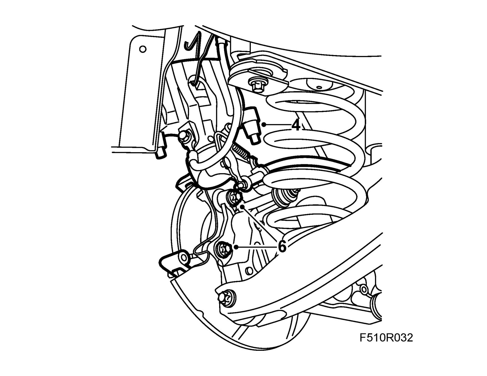
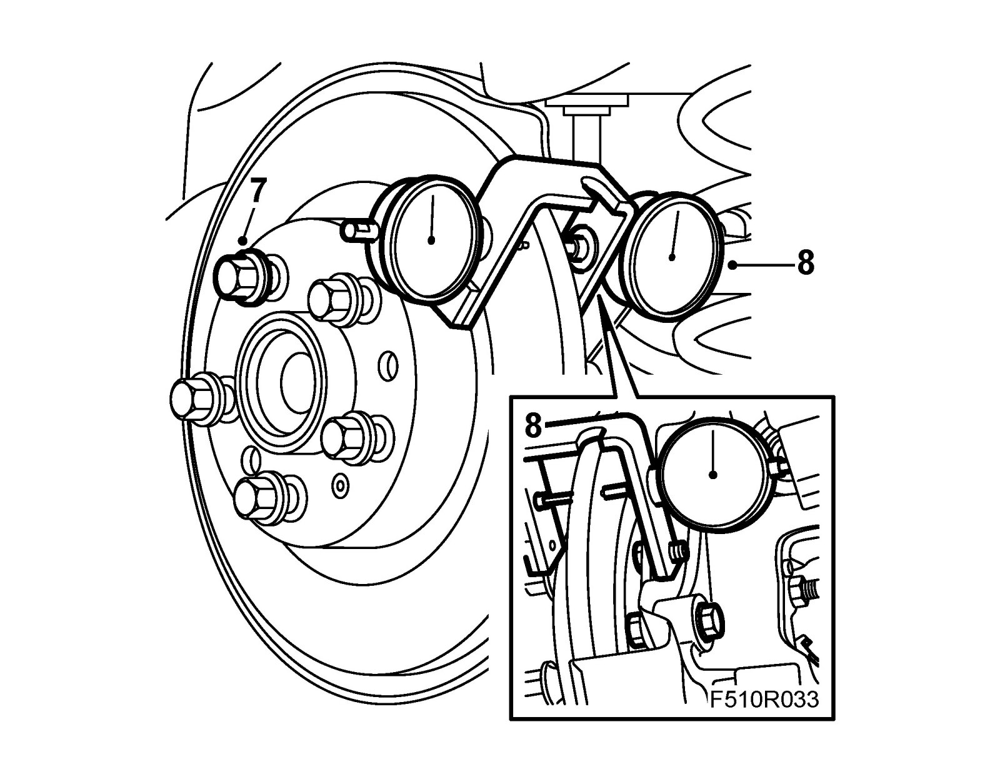
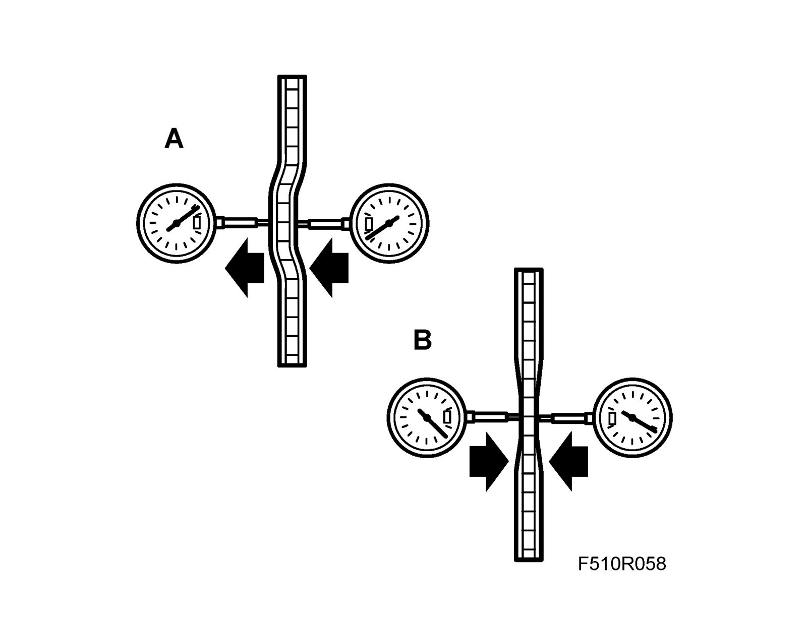
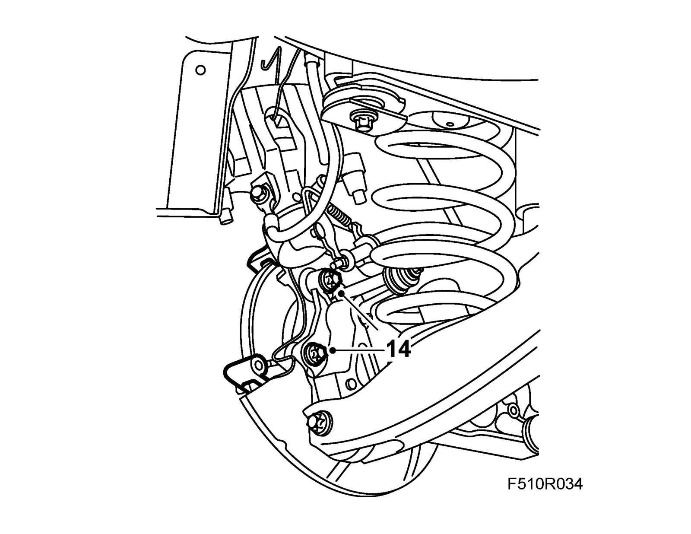
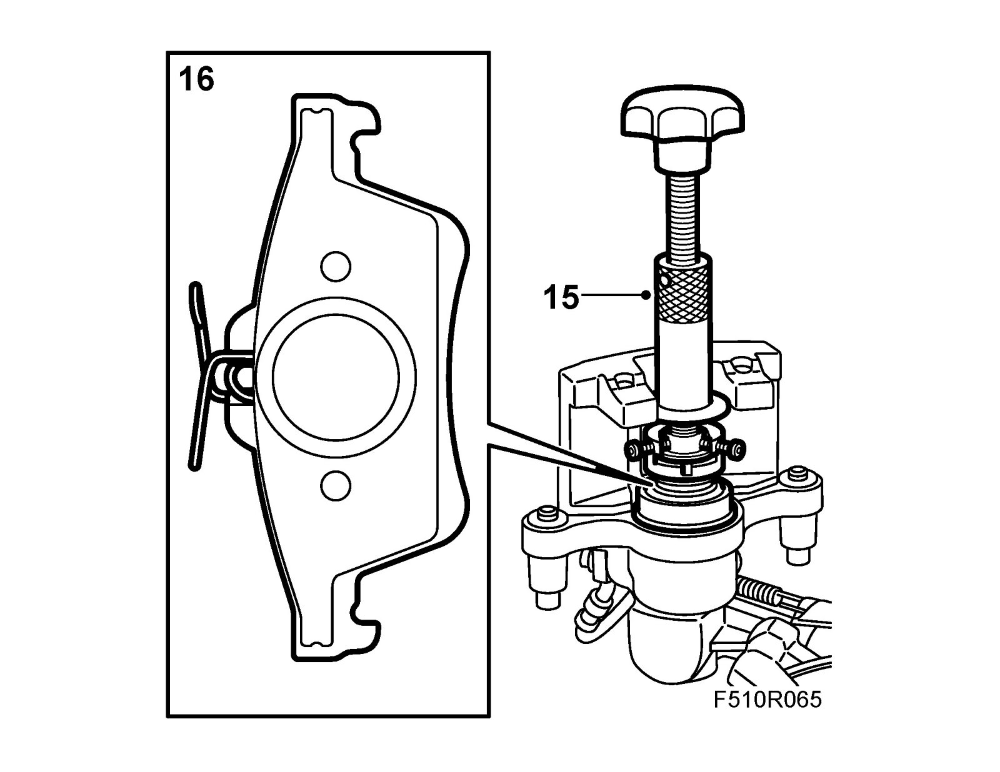
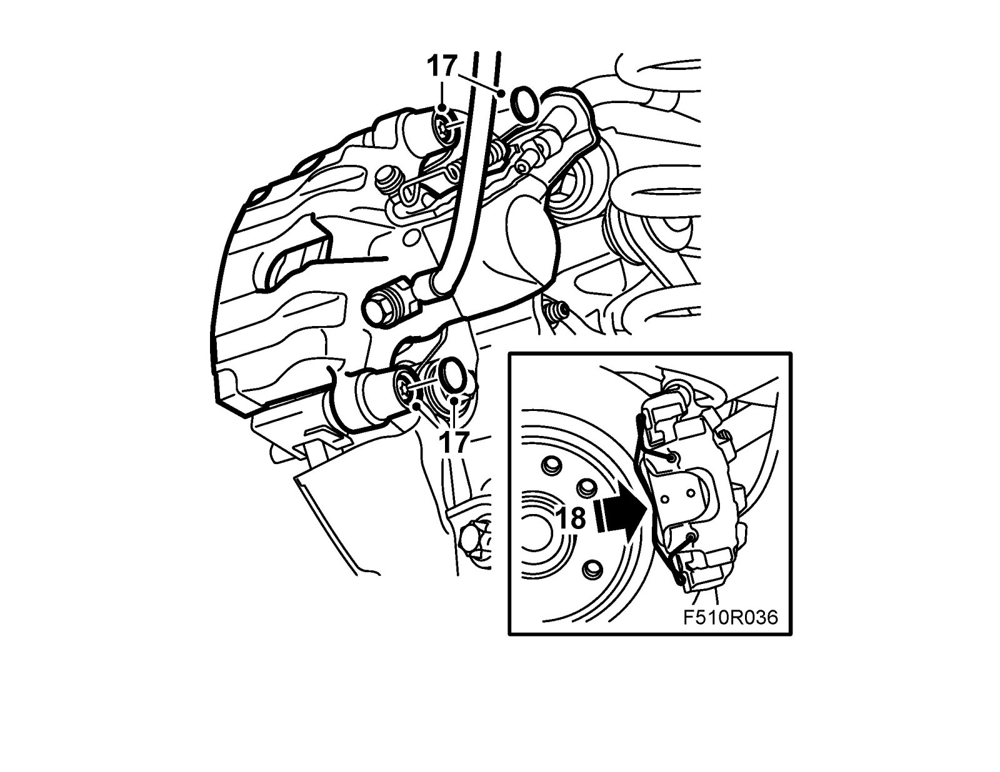

Checking For Lateral Run-Out and Variation In Thickness, Rear Wheels
Checking for lateral run-out and variation in thickness, rear wheels1. Raise the car and remove the rear wheels.
2. Start by control measuring on one side.
3. Remove the retaining spring from the brake caliper.
4. Remove the protective covers.
Remove the hydraulic body and suspend it with a hook on the brake pipe holder.
Note
Be careful not to damage the brake pipe.
5. Remove the outer brake pad.

6. Remove the brake caliper carrier.
7. Fit the five wheel bolts with one washer, part no. 80 73 124, on each.

8. Mount the brake disc on the lower retaining lug for the brake caliper with an M10 bolt and nut. Fit a 78 40 622 Dial gauge on each side.
9. Rotate the brake disc while observing the outboard dial gauge. Zero both gauges when the negative reading obtained on the outboard one is at maximum.

10. Rotate the disc and read the gauges. Note the runout (A) and variation in thickness (B).
11. Check that the readings are within specified intervals, see Brakes - Footbrake system - Technical data - Brake discs - Rear.
12. Remove the dial gauges, brake disc measuring tool and wheel studs with washers.
13. If the measured runout and thickness variations are outside the tolerances, see Brakes - Footbrake system - Technical data - Brake discs - Rear, then the discs must be turned or replaced, see Brake disc, rear and Brake disc, rear, 4WD
14. Clean the contact surfaces between the brake caliper carrier and the steering swivel member.
Fit the brake caliper carrier with 74 96 268 Thread locking adhesive.
Tightening torque 130 Nm +45° (96 lbf ft +45°)

15. Remove the inner brake pad and screw in the brake piston using 89 96 969 Resetting tool and 89 96 977 Adapter

16. Fit the brake pads.
17. Fit the hydraulic body.
Tightening torque 28 Nm (21 lbf ft)
Fit the protective covers.

18. Fit the retaining spring to the brake caliper.
19. Fit the wheel
20. Repeat this method of measurement on the other brake disc.
21. Lower the car and depress the brake pedal to press out the brake pads.